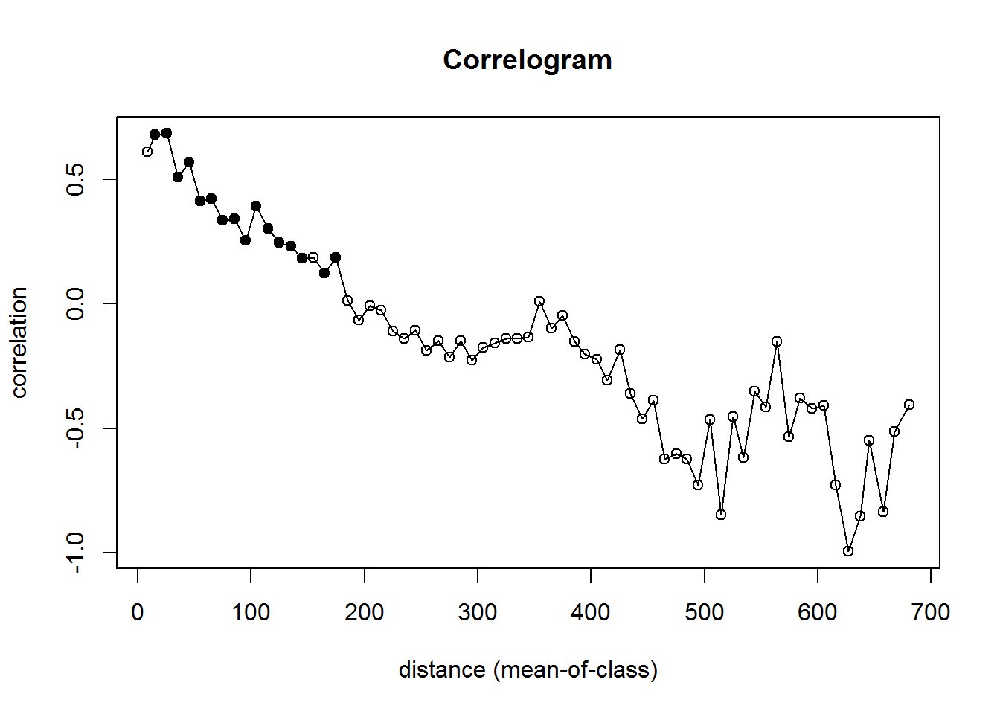

ratdat <- read.csv("Cap_data_for SA.csv")library(ncf) #package for building correlograms## Warning: package 'ncf' was built under R version 3.3.2library(nlme)## Warning: package 'nlme' was built under R version 3.3.2library(raster)## Loading required package: sp##
## Attaching package: 'raster'## The following object is masked from 'package:nlme':
##
## getDatalibrary(vegan)## Warning: package 'vegan' was built under R version 3.3.2## Loading required package: permute## Warning: package 'permute' was built under R version 3.3.2## Loading required package: lattice## This is vegan 2.4-1##
## Attaching package: 'vegan'## The following object is masked from 'package:ncf':
##
## mantel.correloglibrary(colorRamps)## Warning: package 'colorRamps' was built under R version 3.3.2library(emdbook)x.coords <- (ratdat$UTM.E)
y.coords <- (ratdat$UTM.N)
density <- (ratdat$Density)
slope <- (ratdat$WWslope)?correlog## starting httpd help server ...## doneplot(rat.cor)
thin.max <- function(x, cols, npoints){ #Create empty vector for output
inds <- vector(mode="numeric")
#Create distance matrix
this.dist <- as.matrix(dist(x[,cols], upper=TRUE))
#Draw first index at random
inds <- c(inds, as.integer(runif(1, 1, length(this.dist[,1]))))
#Get second index from maximally distant point from first one
#Necessary because apply needs at least two columns or it'll barf
#in the next bit
inds <- c(inds, which.max(this.dist[,inds]))
while(length(inds) < npoints){
#For each point, find its distance to the closest point that's already been selected
min.dists <- apply(this.dist[,inds], 1, min)
#Select the point that is furthest from everything we've already selected
this.ind <- which.max(min.dists)
#Get rid of ties, if they exist
if(length(this.ind) > 1){
print("Breaking tie...")
this.ind <- this.ind[1]
}
inds <- c(inds, this.ind)
}
return(x[inds,])
}m2 <- gls(log1p(density)~slope + I(slope^2), data = ratdat) #model without including SA residuals
m3 <- gls(log1p(density)~slope + I(slope^2), correlation = corExp(form = ~UTM.E + UTM.N, nugget = TRUE), data = ratdat) #we add the correlation argument to run the same model with SA residuals included
vario2<- Variogram(m2, form = ~UTM.E + UTM.N, resType = "pearson") #create variograms that you can then plot!
vario3 <- Variogram(m3, form = ~UTM.E + UTM.N, resType = "pearson")